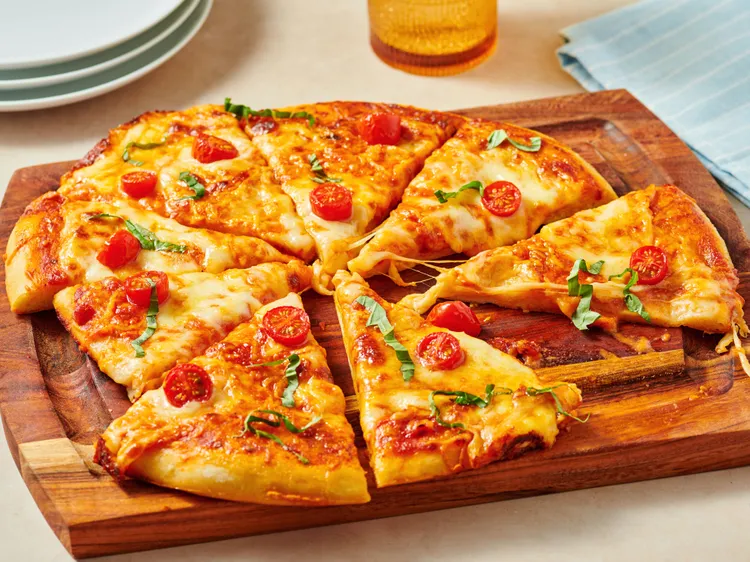

Vodka Pan Pizza Recipe
In this vodka pan pizza, traditional margherita pizza is transformed by the addition of vodka sauce. Store bought dough and sauce will allow you to have pizza faster than delivery, start to finish

Ingredients:
- 1 pizza dough
- 1/2 cup vodka sauce
- 1 cup mozzarella cheese
- 1/4 cup fresh basil leaves
Instructions:
- Preheat the oven to 475°F (245°C).
- Roll out the pizza dough and place it in a greased pan.
- Spread the vodka sauce evenly over the dough.
- Sprinkle the mozzarella cheese on top of the sauce.
- Bake for 12-15 minutes until the crust is golden and the cheese is bubbly.
- Garnish with fresh basil leaves before serving.
Back to Home